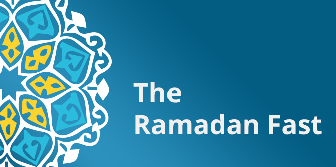

As part of its series “A Time of Crisis, A Time for Leadership” for fellows and graduates of its leadership development programs, the Mandel Foundation–Israel hosted a virtual event focusing on cultural, ideational, and psychological aspects of the Ramadan fast.
The speakers at this session were Dr. Ayman Agbaria, faculty member of the Mandel School for Educational Leadership and senior lecturer in the department of leadership and policy in education at the University of Haifa; Qadi Muhammad Rashid Zibda, president of the Jerusalem Sharia Religious Court; and Dr. Arin Salamah-Qudsi, a senior lecturer on Sufi and Islamic Studies at the University of Haifa. The speakers discussed a variety of questions relating to Ramadan, such as: Why do Muslims fast? Why does the fast last an entire month? What are the ideas and values behind the fast? What is the universal message of Ramadan?
“Ramadan is a perfume. You douse yourself in it and it is supposed to stay with you. A fast is renewable energy that is meant to last for the whole year,” said Dr. Agbaria, the moderator of the session, in his opening statement. “The practice of fasting is an ancient human technology. It is a technology of the self, through which we try to organize and discipline… our lusts, wants, and desires. It’s a technology for working on yourself…. All civilizations share this foundational practice of abstinence, retreat, and restraint.”
Qadi Muhammad Rashid Zibda emphasized the essence of the fast as being the awe of the divine presence, and the desire of the believer to receive God’s love through fasting, which is one of the five pillars of Islam. “The fast is a religious obligation; however, its purpose is not to burden the believer but rather to benefit mankind as a whole. The month of Ramadan is a time for doing many good deeds and for bringing joy to others. This is a special time of year, for it is the month in which the Quran was handed down from heaven to the prophet Muhammad. The fast is not a goal in itself, but rather a means for cleansing one’s soul, for reviving the humanity that is within all of us, which is worn down during our daily grind, and for habituating us to be good and kind to others: our families, those around us, and all of mankind,” he explained.
Dr. Arin Salamah-Qudsi chose to focus on the concept of introspection in the psychology of the Islamic mystical denomination known as Sufism, which emerged at the end of the eighth century in Iraq and Persia, and which takes an ascetic approach to Islam. As she explained it, at the heart of the Sufi experience is the aspiration to draw closer to God, with the aim of achieving total unity with the divine. This is the true purpose of the fast, which is the peak of an ongoing process of emotional restraint. The fast is an uncompromising war with our ego and desires, such that it is transformed from an obstacle to be overcome to the realization of this ultimate goal. “The fast is a commandment that exists solely between man and God, for it has no external expression. Fasting is an important practice that brings man closer to God,” said Dr. Salamah-Qudsi.
The speakers took questions and comments from the audience. Among other things, these related to the etymology of the word “soul” in Islam; the extent to which the trend of celibacy and asceticism in Sufism was influenced by Christian monasticism; whether Sufism also included antinomian ideas; the tension between the communal aspect of Ramadan (e.g., the iftar meal that breaks the daily fast) and the intimate aspects of fasting being a practice between man and God; and the question of how prevalent the fast of Ramadan remains among today’s younger generation of Muslims.
Dr. Agbaria closed the session by highlighting the fact that the readings and commentaries presented during the session are our own modern interpretations, based on our daily realities and on our desire to re-energize tradition with the spirit of the times, in order to reconnect to it and to give it a greater meaning, significance, and place in our lives.
{kind=link}